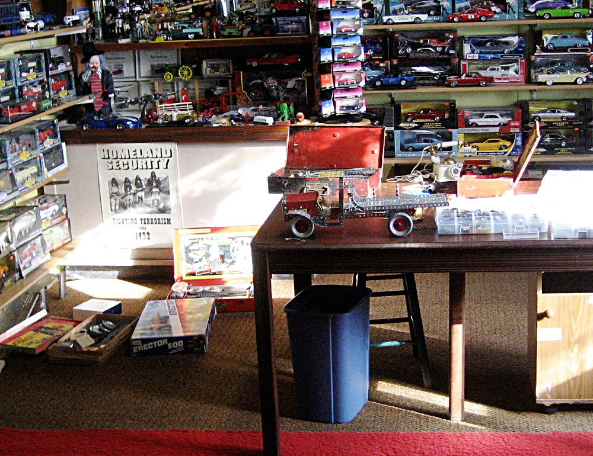
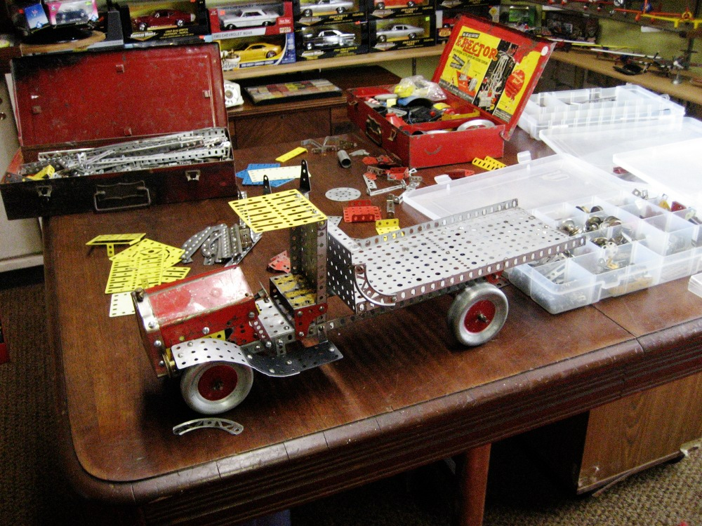
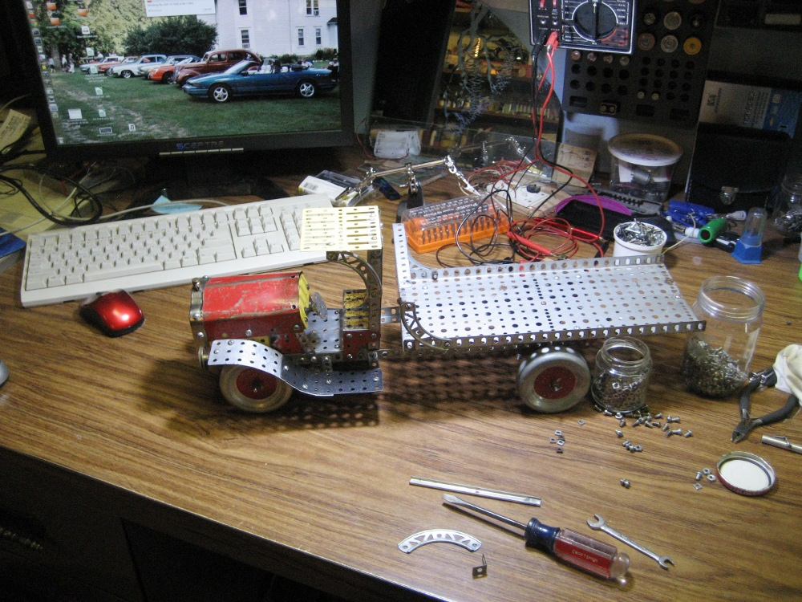
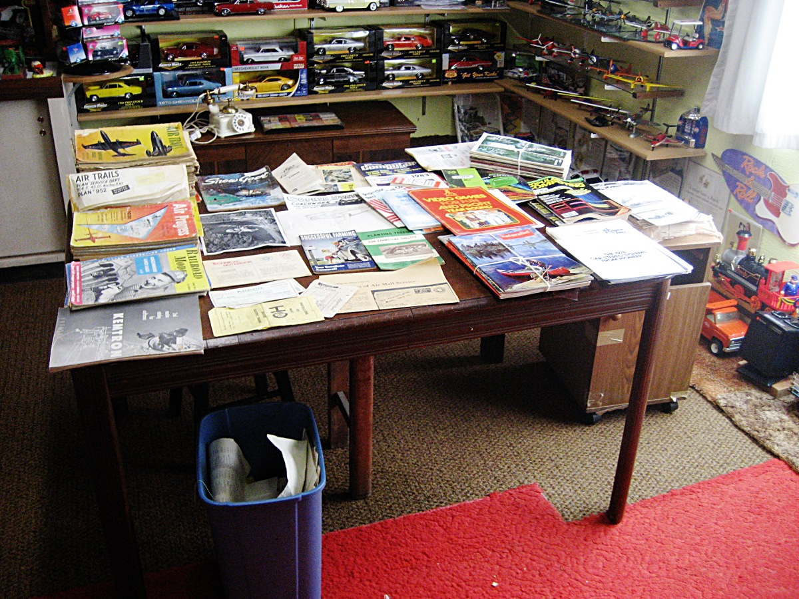
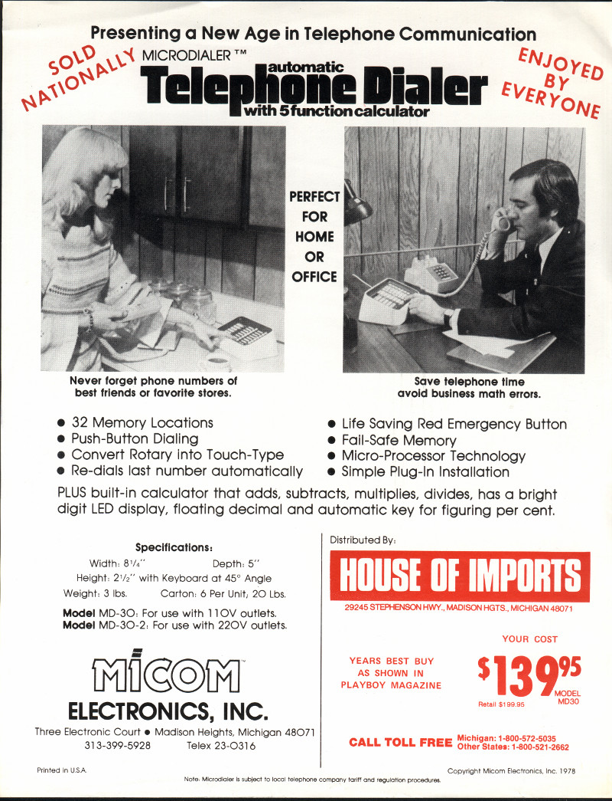

30th January 2014, 12:29 pm
It was 16 degrees below zero the other morning so I decided to avoided being outside for the day. I started sorting through some old Erector Sets I had tucked away. When I was a young boy they were my favorite toy. We had no TV to watch and radio didn’t totally fill your mind. With the Erector Set I would be totally occupied.
My oldest brother was 18 years older than me and he had left Me a fairly large Gilbert Erector Set. I also received two or three newer sets. A very small one to start with, when I was about six, then bigger ones as I got older. These I of course saved. Then in my adult years, I would stop at Garage Sales and invest in Erector set parts or partial sets if the price was right. Then these would be brought home tucked safely away and forgotten.
I have spent some time before sorting and cleaning parts, but I still have a way to go. I dug out a batch of stuff that morning, as you can see in the photo below.
I wasn’t quite in the right mood for sorting and cleaning. As I looked at the parts, I started to see a truck.
Erector truck among the parts
It was like being back in time. I had only my imagination to guide me. I put pieces together and dug through the parts for ideas. I did back up a few times to do things a bit different. By dinner time I thought it was looking pretty good, so I brought the camera out.
When I was a small boy there weren’t many toys in small town stores. The last page of the Gilbert Erector Set instruction book had a list of parts you could order. So one year with my birthday money I searched the list and ordered The hood and radiator. I don’t remember ever ordering anything else but I am sure I did. Mail order was fun. It was exciting waiting for the Mailman to come by every day.
This picture shows the red hood and chrome radiator on the truck. The hood has a lot of patina. I used it many times, not only on trucks and cars but to cover the electric motor on stationary set ups. I have never seen it in a set but it must have been once.
On the right side of the picture are plastic boxes where I have sorted out small parts. This is my attempt to bring some order to my collection. Many times the Erector parts I bought were mixed with other toys or just in bags or old boxes.
Erector Truck in Progress
The picture below is where I did the assembly work. I can sit in a comfortable chair and I have an electric heater under the desk by my feet. It is an excellent spot on these real cold days. My fingers aren’t as nimble as they once were. Putting in the small bolts was a bit more time consuming than it used to be. I wish I had taken more pictures but I hadn’t planned ahead. I would assemble pieces and then take the truck back to the table with all the parts and search for what else i could add or change. It really was enjoyable just following your imagination.
Erector Truck in Workshop
The picture below is where I displayed it among my other toys. I can enjoy it more here then when it was just parts tucked in a box.
26th January 2014, 06:02 pm
I couldn’t resist taking another photo today. The wind has come up to 35 MPH with the gusts reaching 53 MPH. The temperature on my thermometer has dropped to 0 degrees. As you can see by the picture below one wouldn’t want to be out in an open aria.
This pictures and the one below were taken from the same location. Both are looking north past my grove, down the county black topped highway. I am quite sure the road is not blocked by snow, but it would be very difficult to stay on the road judging from the visibility.
The forecast is for a low temp tonight of 17 degrees below zero. That puts the wind chill at a -40 degrees.
26th January 2014, 03:50 pm
This is winter on the prairie of west central Minnesota. It warmed up and snowed last night. It is hard to tell how much because the wind this AM is gusting to 35 MPH. They are predicting the temp will drop to 17 below zero with wind gusts as high as 55 mph tonight. I think that will only make a difference to the fuel company as my plans are to stay inside.
Walking out into the full wind is almost unbearable to bare skin, but the grove of trees around my house and farm buildings help make it possible to be outdoors at least a little bit if you dress right. Having grown up on this farm and spent much of my life working outside, going out of the house is something I need to do at least some each day.
You can see how the world looks white and gray, it has a beauty all its own. The neighbors seem far away and the only sound you hear is the wind.
One must keep doing something, so I have been going through things I had tucked away over the years. I have saved many old books, magazines and papers of all sorts. I guess I planned to read stuff again but never had the time. Things would get packed away, tucked out of sight in the attic or in my shop and then forgotten.
I have been taking boxes of stuff out and going through it on these cold days. Much is just destined for recycling, but some I just can’t throw out. I open the boxes in my shop where I have room to go through things as you can see in the picture below. You can see the mix of stuff on the table and I have already put plenty in the basket under the table to recycle.
The Air Trails magazines I bought with hard earned money in 1952 and 53. I wore them out reading them and building models from their plans. The set of plans is for a model of a J-3 Piper Cub I built, it is well worn but I can’t throw it away. The model train magazines from when I became interested in HO trains. I also spent a lot of time with electronic magazines. Then by 1957 when I earned my drivers license, I became interested in Hot Rods and a few of those magazines survived.
The list goes on and on. I have saved a few. The early radio, electronic, snowmobile, very early computer and old farm magazines bring back a lot of memories.
Some of the things that turn up are interesting. Most everybody that dabbled in electronics years ago remembers Lafayette Electronics. It was a fun place to buy parts and things you couldn’t buy in a rural town. It is gone now, like so many things I remember. I bought my first VOM Meter from them and I used it for many years.
Why these checks got saved I just don’t know, they probably got tucked away to use in my next order and then were forgotten.
Sorting Treasures Today
24th January 2014, 06:26 pm

I found this old add while cleaning up the old papers I have tucked away. It dates from 1978 which in some ways, doesn’t seem that old to me. Looking at it, has made me think how much the world has changed in many small ways. This large add on device was made to do what your phone does all by itself now. The cost to the small retail shop was the $139.95 with a recommended retail of $199.95. That is way more than I payed for any of the phones I now use. The home phone is handy with every thing built in, but the cell phone is so amazing. You are always able to get in touch from any place at any time. I feel much safer when I am alone in the farm woods with my chainsaw or working out of sight around the farm.
In 1978 there was no internet, or home computers, I could go on and on listing things I use everyday that weren’t around but I think I better go back to going through my old papers and junk.
{kind=link}
{kind=link}
{kind=link}
{kind=link}
{kind=link}
{kind=link}
{kind=link}
{kind=link}
{kind=link}